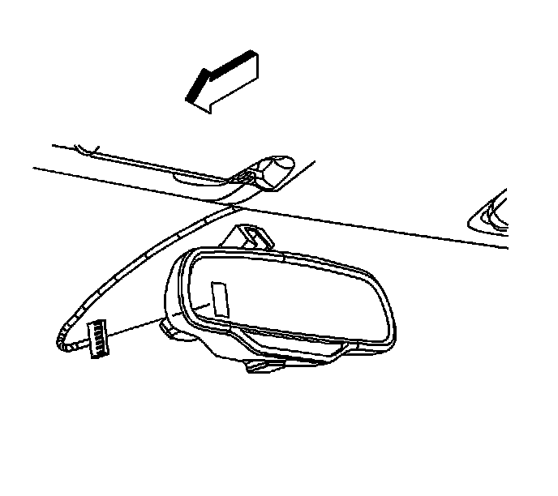
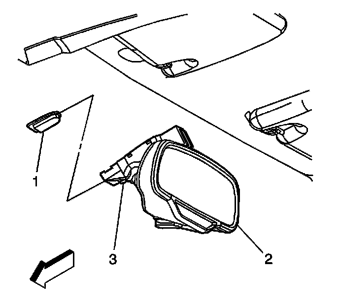

Inside Rearview Mirror Replacement (UE1)
Inside Rearview Mirror Replacement (UE1)
Removal Procedure

1. Disconnect the electrical connector from the back of the mirror.
2. Remove the wire cover.
3. Adjust the mirror to the full upward position.
4. Remove the base trim cover.

5. Loosen the screw (3) in order to remove the mirror (2) from the button assembly (1).
6. Slide the mirror assembly in an upward motion in order to remove.
Installation Procedure
1. Position the center bottom of the mirror mount against the windshield at the top of the support button (1).
2. Slide the base of the mirror onto the button.
Notice: Refer to Fastener Notice .
3. Make sure the mirror is firmly seated on the windshield button by pushing down on the base of the mirror.
Tighten the screw (3) to 1.8 N.m (16 lb in) in order to secure the mirror base to the button.
4. Install the base trim cover.
5. Connect the electrical connector.
6. Install the wire cover.
7. Reposition the mirror assembly.